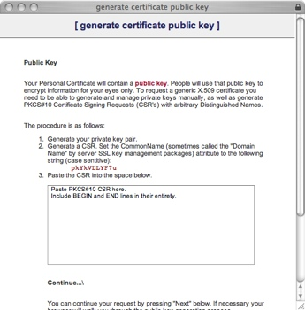

| dallaway.com - Writing - Web Start and Code Signing - Renewal Steps |
A Thawte certificate is only valid for one year, meaning you'll need to renew the certificate. Here's a step-by-step on how to do that.
Richard Dallaway, Spiral Arm Ltd.
May 2006
You'll probably get an email from Thawte warning you that your certificate is to expire some months in advance. If you also use the Ant task I mentioned in the original article, you'll know you'll need to renew because runing the task will produce output like this:
richard@hotdog:sloppy $ ant -f etc/build.xml sign
Buildfile: etc/build.xml
sign:
[signjar] Signing Jar : sloppy.jar
[signjar] Warning: The signer certificate has expired.
BUILD SUCCESSFUL
Total time: 3 seconds
The first thing to know is that you can't renew the certificate. What you actually do is create a new signing request. Here's how...
Login to manage your personal email certificates, via https://www.thawte.com/cgi/personal/cert/status.exe. - don't both trying to access this view the "Renew" links on the Thawte site. You'll be asked to login to view this page using your Thawte ID and password.
Under the "expired" message, follow the link to "request another".
A window will appear offering two options. You want to press the "test" button that is under the "Developers of New Security Applications ONLY" heading.
The next window to show up will list the certificates that are available for request. Select the "Paste-in CSR Certificate Enrollment" option and press the "test" button.
On the Configure Certificate Name, I just pressed the "next" button.
Configure the email address by ticking the email address you're presented with, and press "next".
Now it's time to paste in the new certificate request. I recommend creating a new alias
for your renewal and running the following command:
The really important part here is that the first and last name you enter must be the "CommonName" show as item 2 of this Thawte screen (shown right). Now export your signing request to a text file: renew.txt will look something like this...
|
 |
You will now see a confirmation screen. Press the "finish" button.
Your request will be submitted to Thawte and you will see a confirmation screen. You will receive a confirmation via email that your request has been submitted, and some time later (probably minutes) you'll have confirmation that your request has been processed and your certificate is ready to download.
You don't have to wait for the email. You can go to the status page and view the deails for the certificate: when it's down click on the Fetch button to download the client.
You'll get a page full that looks like this:
Copy all text between BEGIN PKCS #7 SIGNED DATA and the END part, including those parts
and save to a file, maybe called mycert2.cert.
You'll probably need to "fix" the certificate:
java -jar thawtecleaner.jar mycert2.cert
Then import the certificate:
$ keytool -import -file mycert2.cert.clean -alias myalias2 -trustcacerts -keystore keystore
Enter keystore password: trustno1
Certificate reply was installed in keystore
If you get an error, such as java.lang.Exception: Input not an X.509 certificate, you should
check the Thawte support documents (here
and here).
Also make sure you're running the command import command with the right paths to keystore.
We can now re-run out signijng command, but ensure that we've
changed the alias. E.g., in your build.xml file:
<target name="sign">
<signjar keystore="keystore"
jar="sloppy.jar" alias="myalias" storepass="trustno1"/>
</target>
Finally run the signing command:
$ ant -f etc/build.xml sign
Buildfile: etc/build.xml
sign:
[signjar] Signing Jar : sloppy.jar
BUILD SUCCESSFUL
Total time: 2 seconds
Congratulations! Your application is signed.
renew.html,v 1.3 2006/04/24 11:16:53 richard Exp